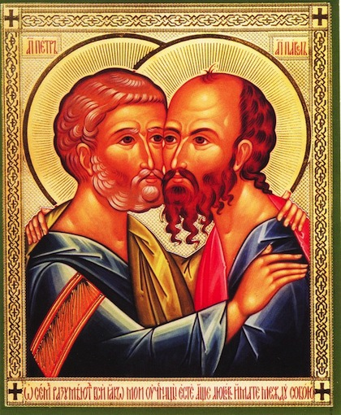

12 июля — День святых первоверховных апостолов Петра и Павла
«Дал еси утверждение Церкви Твоей, Господи, Петрову твердость и Павлов разум, и светлую мудрость, и обоих богогласие истинное», — говорится в стихире праздника.
Желаем, чтобы вера ваша была искренней, ревностной и твердой, как камень, а ваши дела и слова были исполнены мудрости и любви.
Пусть эти великие ученики Христовы будут нам указателями, опорой и примером истинного христианина, следуя которому через покаяние и смирение, мы сможем утвердиться на пути нашего спасения.
Спаси всех Господи!
Дорогие братья и сестры!
От всей души поздравляем Вас с праздником Святой Троицы! Пусть благодать Святого Духа пребывает с вами, питает и укрепляет вас в вере и сопутствует в добрых делах! И пусть тысячи вокруг вас спасутся!
Выступление Бобкова Вячеслава Григорьевича
Выступление брата Сергия
Выступление отца Николая
Состоялась поездка в д. Слободка.
На воскресной литургии присутствовали наши братчики и насельники столбцовского ПНИ. После литургии провели небольшой пикник.
Также состоялась встреча с молодежной группой Свято-Елисаветинского монастыря на комсомольском озере.
Поздравляем сестер с днем жен-мироносиц! Желаем им всегда нести мир всем окружающим их людям!
Со светлым Христовым Воскресением!

Своим молитвенным подвигом блаженная Моника показала миру великую силу любви жены и матери. Семейная жизнь принесла ей много скорби и страданий. Она терпела неверность и буйный нрав мужа-язычника, избрав путь кротости и любви. Своей горячей молитвой и смирением она хранила мир в семье и побеждала гнев мужа, который в конце жизни принял Крещение. Блаженную Монику почитают как покровительницу матерей. Ее непрестанная молитва за сына - Блаженного Августина - спасла его от духовной гибели. Со временем он стал одним из величайших отцов Церкви и с благодарностью писал, что своим обращением в христианство он обязан молитвам матери.
Об особой молитвенной помощи блаженнойсвидетельствуют и члены братства в честь Святителя Спиридона Тримифунтского. Как рассказал руководитель братства Сергей Довгаль, именно после того, как несколько человек, посещающих психоневрологические интернаты, смогли попросить молитвенного предстательства святой Моники перед её иконой, принесённой для поклонения в Преображенский храм Заславля, число желающих опекать больных увеличилось в разы. Спустя месяц братство еженедельно посещает уже 4 психоневрологических интерната, и число братчиков выросло до 30 человек.

Братство в честь Святителя Спиридона Тримифунтского поздравляет всех с Вербным Воскресеньем!
Программа пребывания Десницы Святителя Спиридона Тримифунтского в Беларуси
Добавилось видео к предыдущей статье — Посещение психоневрологических интернатов меняет жизнь волонтёров братства Святителя Спиридона Тримифунтского
Статья на sobor.by — Посещение психоневрологических интернатов меняет жизнь волонтёров братства Святителя Спиридона Тримифунтского
Апрельское собрание братства — Краткие заметки того, о чем шла речь.
Статья на sobor.by — Муж разрешил оставить работу, чтобы я могла посещать подопечных в Тарасиках - Ангелина Гурская, волонтёр братства Святителя Спиридона Тримифунтского
Статья на sobor.by — Подопечные братства Спиридона Тримифунтского приняли участие в чине прощения и покатались на санях